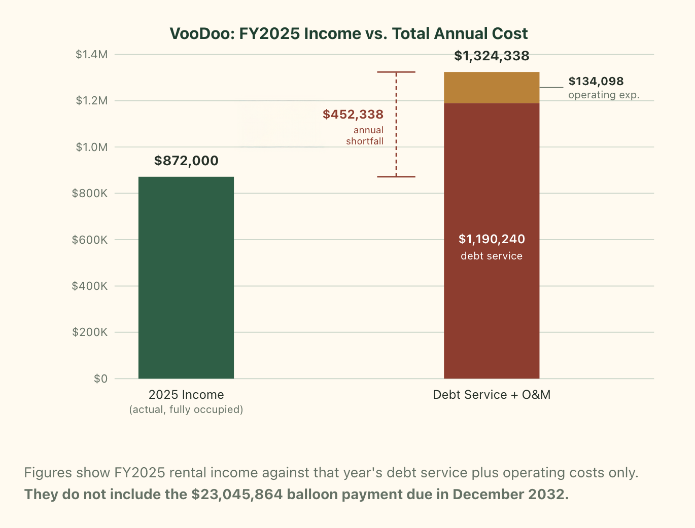
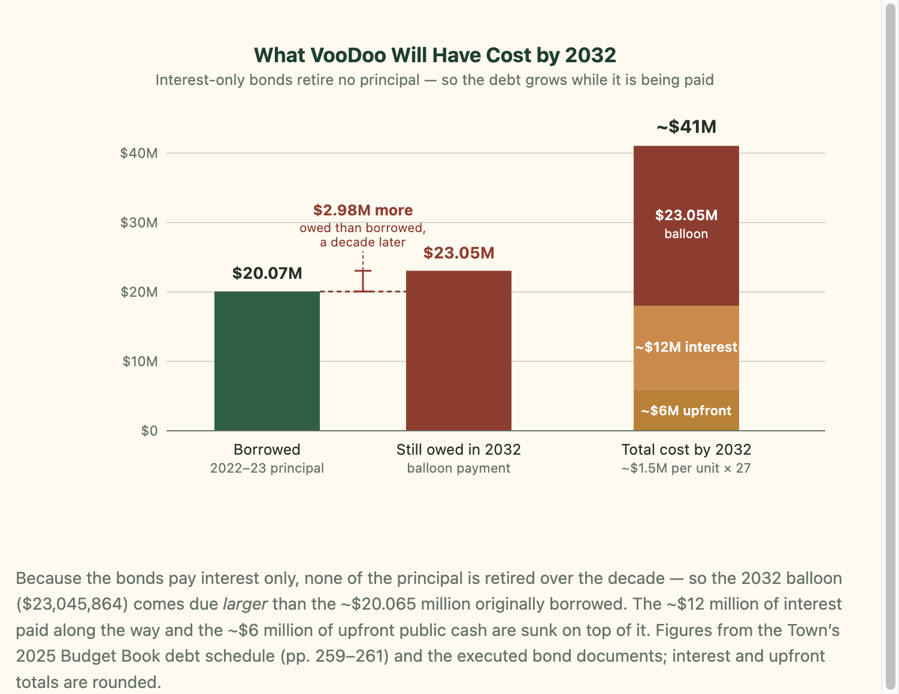

VooDoo's project debt offers a preview of what two much larger projects could cost if Telluride waits again to ask the right questions.
When the Telluride Housing Authority approved financing for its VooDoo apartments in December 2022, the vote took less than half an hour. The building's design had already been reviewed for the better part of two years, but the debt had never been publicly reviewed.
The gap between how long Telluride scrutinizes what a public housing project will look like and how little it examines what the project will cost is now the central question hanging over two much larger developments under review by the town: Carhenge and Shandoka Lot L, a combined bet that could run to more than $400 million in construction costs alone.
A private developer would not build first and then ask whether a project pencils out; overspending on design or misjudging the market is that developer's own risk to absorb. When the Town of Telluride is the developer, that sequence is effectively reversed, and the consequences of a bad bet fall on residents rather than on a single risk-bearing investor.
The Town as Applicant Problem
The Carhenge and Shandoka Lot L could represent hundreds of millions of dollars in construction, nearly 300 new residential units with mostly underground parking, infrastructure, and long-term public debt. Yet the central questions remain largely unanswered in public, such as how much the projects will cost and how much debt will be covered by their income.
These are not minor details. They are the questions that determine whether a project is financially sustainable, legally buildable, and worth pursuing. The problem is that Telluride's development-review process is not designed to answer such questions until the very end, if at all.
The Cost of Not Asking
During the recent review of Carhenge and Shandoka Lot L, Planning and Zoning Commissioner Todd Brown openly described the gap in the process. He said the commission was being asked to evaluate project benefits without receiving the corresponding costs. Those questions, he explained, are left to Town Council or the housing authority. “We can't, as P&Z, tell you how it's going to work, because we don't get to [the costs], ever.”
With the understanding that the Town is set up to prohibit either P&Z or HARC from reviewing the financial feasibility of any project, the question becomes: when is this ever addressed?
What VooDoo Actually Cost
VooDoo offers an answer, but it is not reassuring. The building's design underwent 18 to 20 months of public review. Its financing received less than half an hour of the Telluride Housing Authority's (THA) time, during a presentation dominated by staff, bond counsel, and the bond's placement firm.
The numbers that emerged from that half hour, drawn from the town's much later budget documents and bond records, are stark. Between 2022 and 2023, Telluride borrowed $20 million in revenue bonds and added another $5.9 million in direct subsidy, bringing the all-in cost of the 27-unit project to roughly $26 million — nearly $1 million per unit before a single tenant moved in.
The building now earns less than $1 million in annual rent when fully occupied; in 2025, actual rental income totaled $872,000. Its bonds carry an annual debt service of $1,190,240, structured to keep early payments artificially low. Add roughly $140,000 in annual operating costs, and the project runs an annual shortfall of $320,000 to $500,000 — 30 to 50 percent of its income — even before that low, interest-only debt service escalates further.

By 2032, when the bonds come due, Telluride will owe $23 million against original principal of $20 million: the town will owe more than it borrowed, a decade after borrowing it. Add the roughly $12 million in interest paid over that decade and the $6 million spent upfront, and VooDoo's ultimate price tag approaches $41 million, or about $1.5 million a unit, with essentially none of the original principal retired after ten years.

It is a financing structure that mirrors, in miniature, a familiar form of consumer debt: “minimum credit card payments” that keep the monthly bill low while leaving the underlying balance constantly increasing.
How the Approval Happened
VooDoo's origins trace to April 2021, when the Town Council directed a subcommittee of the THA to begin site planning, design and cost estimation for what would become the project. Town funds were committed to design and early construction work before a plan existed. CCY Architectural was hired to produce drawings; by early 2022, those drawings had gone before the town's planning and zoning commission and its historic review board without any accompanying cost estimates.
That started a train moving from the station that likely could never be stopped.
Financial scrutiny did not arrive in any meaningful form until nearly a full year after design review began, and, records show, without having been raised at a Council meeting in the interim.
The THA's December 2022 meeting bears this out. Town Program Director Lance McDonald, presenting on staff's behalf, estimated the project's construction cost at around $26 million. However, on the financing and debt, the record is sparse: no estimated annual debt service cost was presented, and no dollar figure for the eventual balloon payment appeared in Mr. McDonald's presentation or in the 329-page agenda packet distributed beforehand.
Nowhere in that record does the figure that would come due appear: $23 million owed in 2032 against $20 million borrowed. (Meeting video is located here, and the entire financial discussion by the THA is between 3:57 and 4:26.)
The town does retain the option to refinance the debt before the balloon comes due, but refinancing does not change the underlying arithmetic: construction costs were high, and the rents the project can charge are capped by what local workers can pay — no more than 30 percent of income, under the same affordability guidelines the THA uses to set rents in the first place.
Where a private developer would have spent months creating financial modeling before breaking ground, THA approved the financing in half an hour, after the project already received all other approvals and the design review was complete.
The Unaffordability of Affordable Housing
A Telluride Daily Planet analysis published July 27 found that 13 percent of the town's 244 government-owned rental units, spread across six properties, are now vacant, a trend residents attribute to rent increases the THA imposed in late 2024. That vacancy pressure is landing on a debt structure that could not support itself even before it appeared: in 2025, VooDoo's $872,000 in rental income covered barely two-thirds of the $1.32 million owed annually in debt service and O&M. This math leaves the THA with no clean exit.
Raising rents further to close the gap may empty more units. Lowering rents to refill those units only widens the shortfall. Either way, the Town of Telluride is left to make up the difference, or the bondholder forecloses on the leasehold that secures the bonds. For a project that does not work financially at full occupancy, a housing market now visibly losing tenants, likely due to cost, is one more reason for concern.
A Bet Ten Times the Size
Carhenge and Shandoka Lot L are now moving through the same process, but at roughly ten times the scale. Livable Telluride's preliminary estimate places their combined construction cost near $400 million, driven in part by the cost of building underground parking at both sites in a high-water-table environment.
At a recent Carhenge story-pole event — a public display of stakes and string outlining a proposed building's height and mass — Lance McDonald was asked how the town could pay for these projects. He pointed to the town's affordable housing set-aside fund, which collects roughly $4 million a year. At that rate, covering the upfront cost of both projects would take on the order of a century.
Despite the lack of an identified funding source, the Town has already spent an estimated $2 million on consultants, legal work, design, and geotechnical studies for the two projects since mid-2022.
An Untested Legal Question
The above financing issues are not simply isolated questions of good government. They may carry legal consequences.
Underlying all of this is a legal question that, from the public record, does not appear to have been tested in Colorado. The Taxpayer's Bill of Rights, or TABOR, allows municipalities to issue bonds for housing-authority projects without a public vote but only if the authority qualifies as an “Enterprise.” To meet that exception to TABOR's voter-approval requirement, no more than 10 percent of the authority's revenue may come from government grants. It is a threshold written for agencies that are largely self-supporting through rents and fees, on the theory that voters need not weigh in on debt a project can service on its own.
The “Enterprise” test applies to the housing authority as a whole, not to any single project: recurring cash transfers from the town count toward the same 10 percent ceiling. The THA's budget already discloses several such lines. VooDoo alone has an estimated annual operating shortfall of roughly $450,000. Sunnyside carries its own annual subsidy, budgeted at $377,000.
The open question is what percentage of the authority's total revenue across all properties that adds up to, and whether anyone at the town has actually run that number.
The Town does not make determining the actual income vs. debt for THA easy: the Town documents appear to be built not to disclose this number. Bond-construction interest, which is a temporary asset that shrinks every year as unspent proceeds are drawn down, is folded into a line called “Miscellaneous Revenue” without being broken out. As written, one cannot tell how much of a fund's apparent income is rent, how much is investment earnings that will soon disappear, or how much is subsidies from the town.
New borrowing appears the same way rent does: Shandoka's 2025 budget records $8.47 million for a building remodel as “revenue,” indistinguishable on the page from money a tenant paid in rent. And the town's most direct subsidies are classified as “moral obligation” payments that keep several of these funds solvent. However, such payments do not appear in the “Total Revenues” figure at all, surfacing only in separate staff memos and debt analyses. The best estimate of actual rental income for the THA is around $4.4 million per year.
The best estimate for total annual debt and operating expenses of the THA is around $5.3 million.
When everything is added, the total annual shortfall the Town covers falls between $700,000 and $1 million a year; this is somewhere between 13 and 19 percent of the total THA annual expenses.
However, if VooDoo's debt were amortized like a conventional loan that paid down principal rather than deferring it to the 2032 balloon, VooDoo's annual debt service would rise from $1.19 million to roughly $2.8 million, pushing total THA expenses to about $6.9 million per year. At that level, the annual gap between rent and cost approaches $2.5 million, or more than a third of the housing authority's total spending.
If the THA no longer meets the required “Enterprise” status under TABOR, it could lose its exemption, which would place every future housing bond, and potentially some already issued, before voters.
This financial risk hanging over the THA is reason enough for the Town to stop delaying its review of the financial feasibility of Carhenge and Shandoka Lot L until it is too late to say no to the project.
Conclusion
None of this means Carhenge and Shandoka should not be built.
It means that, as with VooDoo, the Town has not yet made public what such projects are likely to cost, and how much income they are likely to generate.
As a first step, Town Council should request (1) an independent pro forma identifying all likely costs and income for the projects, (2) an engineering assessment of underground construction costs, and (3) an independent legal opinion — entirely separate from the Town's or the applicant's attorney — on the Backman Village covenant that may require consent of the current owners, and the THA enterprise status before either project reaches a financing vote.
But the history is not encouraging. VooDoo's costs surfaced in full only long after the project received final approval, the money spent, the project built, and the balloon payment locked in. Whether Carhenge and Shandoka repeat that pattern at a scale ten times larger will depend on whether the Town of Telluride is willing to ask questions and get answers before it is, once again, too late to matter.
* * *
Every document behind this account is posted publicly in the annotated timeline below. Readers who want to check a figure, read a quotation in its full context, or judge the record without taking this article's word for it can work through those sources, in the order the events happened.